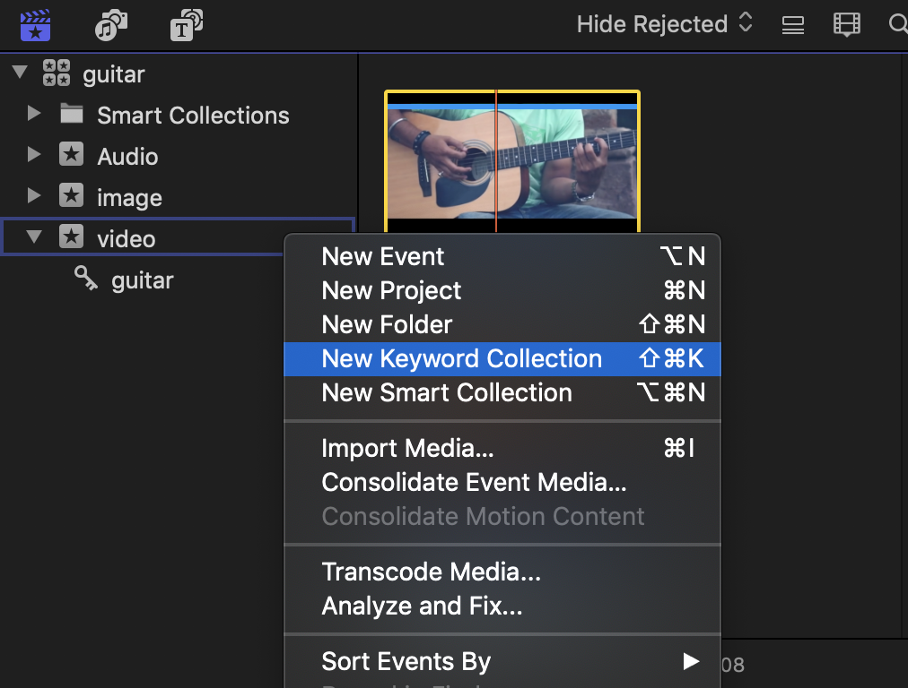

파이널 컷 프로의 장점 : 쉽다. 직관적이다
파이널 컷 프로의 단점 : 왜 쉽다는데 난 잘 못 쓰니..?
New Keyword Collection (핵중요)
라이브러리 안의 라이브러리는 안 된다고 지난 시간에 엄중 경고(?)한 바 있습니다. 그럼 이벤트 안에 이벤트 생성은 됩니까? 라고 물으신다면..

당연히 안 되니까 이런 말도 안 되는 질문을 했겠죠? 그럴 땐 요로코롬 ‘키워드’ 분류를 해주면 됩니다.

그런데 이 키워드는 분류는 소스의 ‘부분’도 가능합니다. 쓰고자 하는 부분의 시작에서 ‘i’를 마지막 지점에서 ‘o’를 눌러주시면(In&Out의 약자가 곧 단축키) 첨부한 이미지처럼 소스 내에서 사용할 부분만 체킹이 됩니다. 그리고 이 부분만 Keyword Collection도 가능하다는 말이죠.
Project
소스 분류하는 방법을 알았으니 추가적으로 영상 관련 세팅을 해주신다면 영상 편집 시작이 가능하겠죠?
해당 경로로 시작하면 됩니다. 역시 텍스트보다는 이미지로 설명하는 것이 우왕굳..
자..! 여러분..! 이 프로젝트 설정값 때문에 그 길고 지루한 영상 이론들을 배운 겁니다!
만약 프레임 레이트 29.97p 써놓고 위에 Drop Frame 설정 안 했으면 마지막 멘트가 과감히 삭제되는 대참사가 벌어질 뻔했쥬?
여기서 Rendering은 그 때 그 때의 최종본을 이르는 말입니다. 파컷은 작업 틈틈이 해당 과정을 렌더링 하는 특성을 가지고 있쥬. 코덱은 표준인 프로레스 422를 선택해줍니다.
그리고 제목은 제발 직관적이고 상세하게 적읍시다. 최종 진짜최종 최최종 더이상 ㄴㄴ
Storyline
프로젝트를 생성하면 타임라인 센터에 진한 줄이 생성됩니다. 여길 기점으로 스토리라인을 짜고 편집이 시작되는 것이죠. 프로젝트 생성 안 하면 활성화되지 않는 영역이니 ‘어우씨 이거 왜 안 생겨!’ 하시면 아니되옵니다.

그렇게 대략적인 분류와 세팅이 끝나면 이제 ‘Append’라 불리는 바로 뒤에 이어 붙이기를 통해 영상 편집을 시작한다고 보면 됩니다 ^^
다음 포스팅에서 ‘분류’에 관한 정산과 함께 본격적인 기본 편집에 대해 다룰테니 많이 기대해 주세요..?